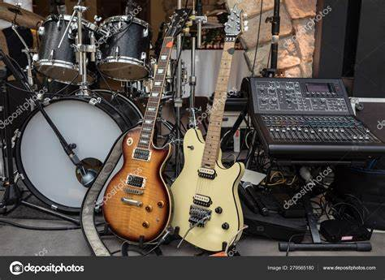

Música Clásica
La música clásica es un género que se remonta a siglos atrás y es conocida por sus composiciones orquestales complejas. Grandes compositores como Mozart y Beethoven han dejado un legado profundo en este género.
Jazz
El jazz es un género musical originado en las comunidades afroamericanas a principios del siglo XX. Es conocido por su improvisación y ritmos swing. Artistas como Louis Armstrong y Miles Davis son algunas de sus figuras más representativas.
Rock
El rock surgió en la década de 1950 y se convirtió en uno de los géneros más influyentes del siglo XX. Bandas como The Beatles y The Rolling Stones llevaron este género a una audiencia global.
Música Electrónica
La música electrónica es un género moderno que utiliza tecnología digital para crear sonidos innovadores. Este género incluye subgéneros como el techno, el house y el dubstep.